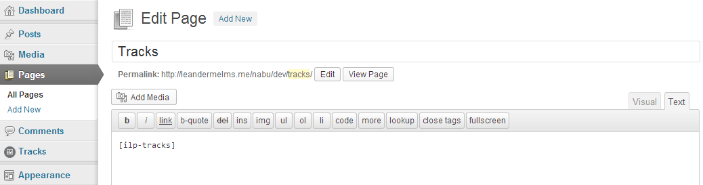
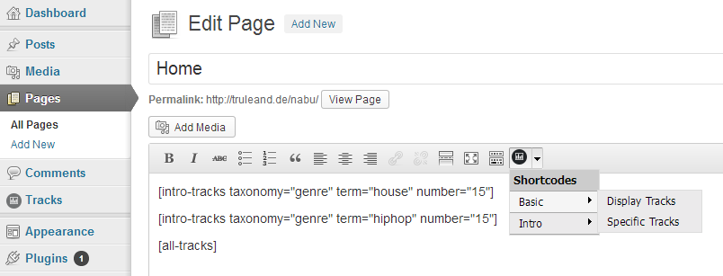
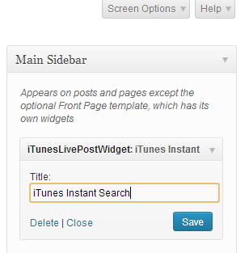
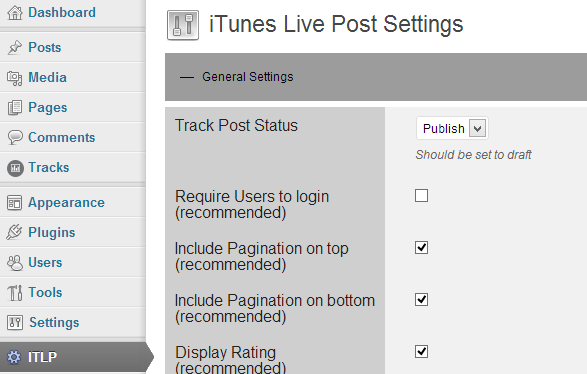
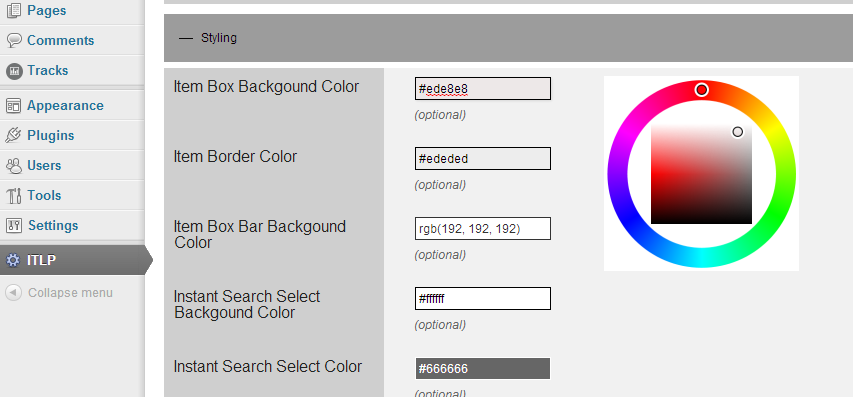
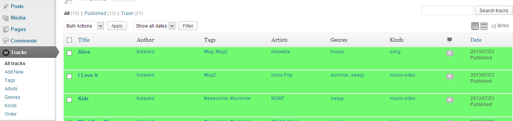
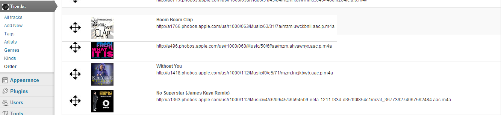

Thank you for purchasing my plugin. If you have any questions that are beyond the scope of this help file, please feel free to open a ticket on my support site. Thanks so much! Support: http://leandermelms.me/support/
Ajax iTunes Search requires almost no configuration to set it up. In fact, only one page needs to be created and the Ajax iTunes Search Widget needs to be placed in a sidebar.
Ajax iTunes Search makes use of the iTunes Search API, i.e. it retrieves all data directly from the iTunes database. Upon track submission, the requested data is passed to the custom post type "track". This is done - like the actual search process - without page refresh and allows submitting tracks in less time. Beside the data provided by the user (such as "genres" or "tags"), Ajax iTunes Search automatically assigns the track to the respective artist and kind (which either is "song" or a "musicVideo").
This information is assigned to custom taxonomies, which makes it easy to filter them accordingly (e.g. when searching tracks, all tracks of the artist "Avicii" could be displayed).
To actually display your tracks, it is recommended to create a page, adding the following shortcode:
[all-tracks]

This shortcode retrieves all data of the custom post type "track" and displays them by default in two columns. Continue by publishing the page.
Additionally, since version 2.0, a new shortcode helper is available, which is located at the visual tab of the tinyMCE editor (small icon).

As explained above, the Ajax iTunes Search Widget needs to be placed in a sidebar of your coice to let users submit tracks. To add the widget:

Ajax iTunes Search can modified with ease to meet your requirements. To do so:
The general settings take effect on the functionality of the plugin and is the most important.

To start with, you should most likely only allow logged in users submitting tracks. To further improve security, the post status of submitted tracks should be set to "draft", giving the site administrator(s) the opportunity to check all submitted tracks before they are actually being displayed.
To change the front end appearance of the plugin, click on the "Styling" tab. Next, you should see a few input fields with descriptions to their left. To change a color of an input field, simply click on it and select the color you like. Once you're done, don't forget to update your settings.

All submitted tracks are stored in a "custom post type". To edit / review your tracks, head over to the WordPress dashboard and click on the "Tracks" menu element.

All tracks are listed in this admin page. Published tracks will appear green, drafts (hold for review) in yellow.
To edit a track, simply click on it and change the information.
Since version 2 tracks can be assigned as "featured" via the admin panel. This option will add a star banner to indicate that the track at question is worth having a closer look on. It is a way of recommending tracks.
To do so, just check the checkbox at the bottom of a track labeled "Featured Track?".
Ajax iTunes Search even lets you re-order submitted tracks by a built-in drag & drop system. To do so:

Since v.2, statistic charts are available which evaluate the number of submitted tracks per day, month and year just to keep track of how things are going. There is no configuration for the statistic page.
Ajax iTunes Search makes use of the following jQuery plugins:
These plugins enhance the functionality of Ajax iTunes Search. Developers, proficient with PHP and jQuery may deregister the js-scripts but will then also need to adapt the plugin Javascript files accordingly.
The plugin both makes use of CSS-files included in the front and back end. All CSS files enqueued in the front end can be found in the /css folder. The only admin CSS file is located in /admin/css.
The main php funtions files are located in the /lib folder:
As Ajax iTunes Search makes use of the iTunes Search API, the plugin is governed by Apple's legal policy. According to them:
"[...] Affiliate may use certain promotional content as may be provided by Apple, including previews of songs and music videos, album art, and App icons ("Promo Content"), for the purposes of promoting the subject of the Promo Content; provided such Promo Content: (i) is placed only on pages that promote the content on which the Promo Content is based; (ii) is proximate to a "Download on iTunes" or "Available on the App Store" badge (as approved by Apple) that acts as a link directly to pages within iTunes or the App Store where consumers can purchase the promoted content; (iii) includes attribution indicating the Promo Content was "provided courtesy of iTunes" if such Promo Content includes song or music video previews; (iv) is streamed only, and not downloaded, saved, cached, or synchronized with video, if such Promo Content includes song or music video previews; (v) is not used for independent entertainment value apart from its promotional purpose; and (vi) is not used to promote any other goods or services. Affiliate acknowledges that Apple provides the Promo Content "as is," and disclaims any and all representations or warranties, including, but not limited to, non-infringement. Affiliate shall forward any claims received in connection with the Promo Content to Apple immediately upon receipt, and will remove any Promo Content immediately upon request from Apple. [...] "
I.e. you must not:
If you have any legal conercs about the usage of the plugin, please talk to a lawer or ask Apple for help. Please note that the site operator is responsible for what information is being displayed.
Once again, thank you so much for purchasing this plugin. As I said at the beginning, I'd be glad to help you if you have any questions relating to this plugin. No guarantees, but I'll do my best to assist. If you have a more general question relating to the plugins on codecanyon, you might consider visiting the forums and asking your question in the "Item Discussion" section.
Leander Melms
Support: http://leandermelms.me/support/